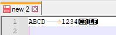
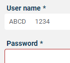
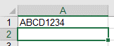

DS2278: Different Transmission of <TAB> character?
I'd like to generate a DMC code representing the input for two subsequent form fields in a browser, separated by a <TAB>.
My DMC for testing is ABCD\t1234 and generated using this generator it looks as follows:
Scanning this code with a DS2278 in USB HID keyboard emulating mode gives different results. The scanner is configured to add CRLF suffix:
- Notepad++:

This is exactly what I expect.
- Browser form:

There's a <TAB>, but it's differently handled than the <TAB> keyboard input, which sets the cursor to field "Password".
- Excel:

No <TAB>. Expectation: 1234 should be in cell B1, just like it would be when I entered ABCD<TAB>1234 using a "real" keyboard.
However: When I configure the DS2278 so that it appends <TAB> as a general suffix, it works! The cursor jumps to B1 after putting ABCD1234 in A1.
In 123Scan DataView I see in both cases that a <TAB> is transmitted. I wonder what's the difference to a <TAB> in the DMC itself?
I have tried to increase the keystroke delay, it didn't help (actually I'm not sure if it worked at all).
How can I make the scanner to handle the <TAB> like a "normal" keyboard input?
looks like you need to enable function key mapping
check article https://supportcommunity.zebra.com/s/article/Enter-and-Tab-keys-in-the-Scanned-Data-are-Not-Properly-Recognized-in-Some-Applications?language=en_US
addtitionaly for more details you can check also the following which provide details on other USB / BT HID options that impact how data is sent to the host
https://supportcommunity.zebra.com/s/article/000026279?language=en_US
Regards
Riad
3 Replies
looks like you need to enable function key mapping
check article https://supportcommunity.zebra.com/s/article/Enter-and-Tab-keys-in-the-Scanned-Data-are-Not-Properly-Recognized-in-Some-Applications?language=en_US
addtitionaly for more details you can check also the following which provide details on other USB / BT HID options that impact how data is sent to the host
https://supportcommunity.zebra.com/s/article/000026279?language=en_US
Regards
Riad
Hi Riad.
Thanks! This did the trick. I wonder why the intelligent chatbot didn't show me the article you've linked... anyway, it works now. @Zebra: It's great to have that flexibility, but maybe it would be a good idea to enable function key mapping by default? I guess most users expect to have "normal" keys instead of some strange control-key sequences (which, to be honest, I didn't know before my DS2278 issue).
Hi Michael , in fact the barcode is encoding ascii decimal value 9 which per windows system translate to Ctrl + I and hence that's what the scanner is sending by default . The function key mapping will translate Ctrl I to the extended TAB key . Same apply to extended keys like ESC or Enter .
Regards
Riad